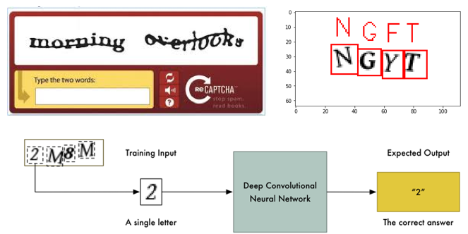
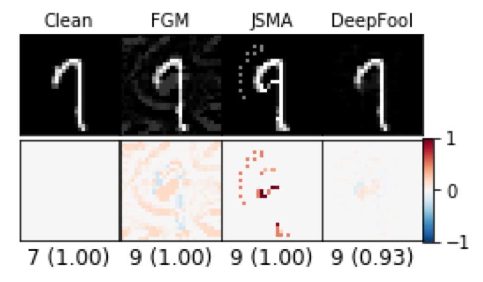
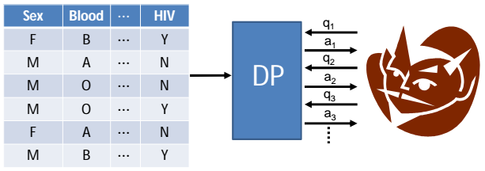

Big data requires "bigger responsibility" in terms of protecting the storage, sharing, and access of the privacy-sensitive data. The goal of this website is to share some projects developed based on a new pedagogy, called Captivology-Stimuli-based Learning (CAPITAL), for active education and training on big data security and privacy (BigSec). CAPITAL follows a project-driven approach which emphasizes on hands-on experiences to keep students' interest in the course subjects. The project is supported by NSF Award #1723250.
Below, we share 3 course projects related to big data security and privacy, which have been successfully used as mini-project assignments in "CS 485/685/785: Data Science Foundations" offered at the Department of Computer Science, The University of Alabama at Birmingham. The evaluation results can be found here. Solution to the projects can be requested by instructors, by sending emails to yanda@uab.edu.
CAPTCHAS Attack by Deep Learning
This project shows how advancement of data science deprecating security technologies. Here, the data science advancement is deep learning, and the security technology is CAPTCHA.
[Course PPT], [Project Description], [Assignment Files]

ConvNet Adversarial Attacks
This project shows how a data science technique itself may not robust to security attacks. Here, the data science advancement is deep learning, and the security technology is data perturbation.
[Course PPT], [Project Description], [Assignment Files]

Anonimity and Differential Privacy
This project introduces the concept of various techinques for privacy preseving data publishing, such as k-anonymity, l-diversity, t-closeness, ϵ-differential privacy, etc.
[Course PPT], [Project Description], [Assignment Files]
